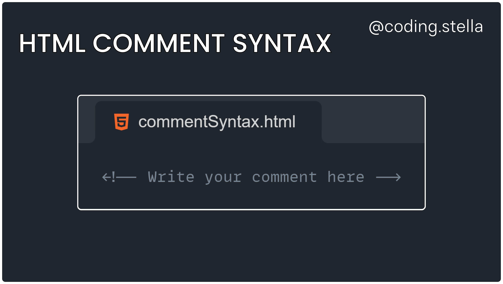
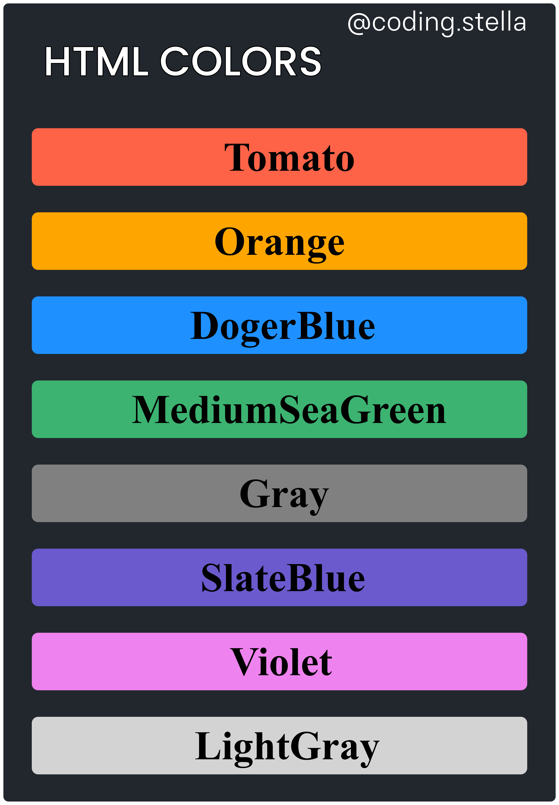
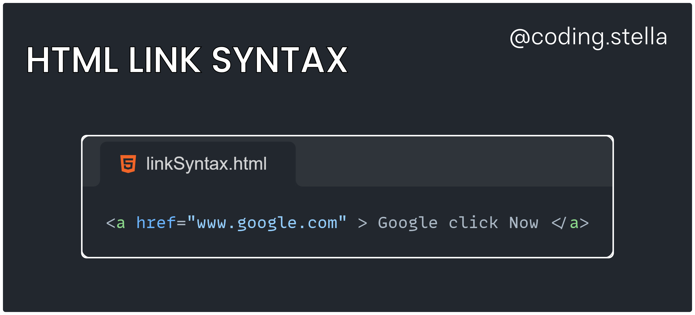
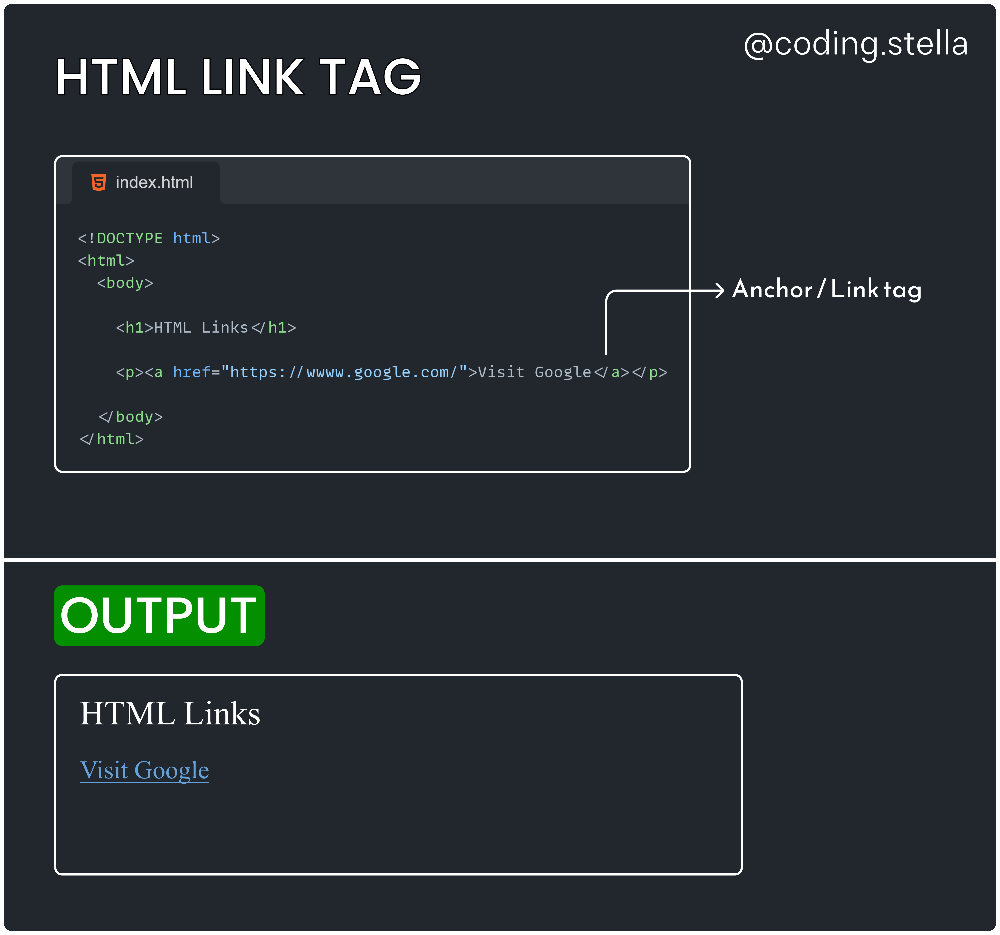
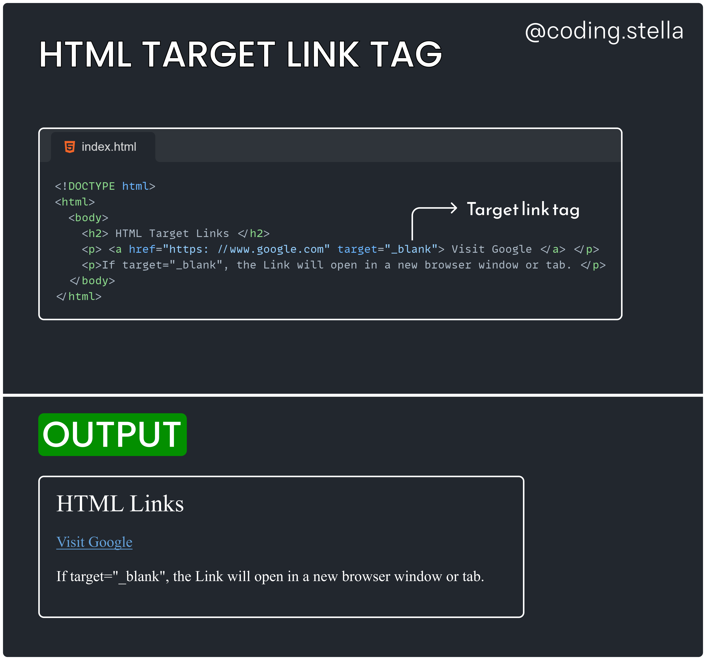
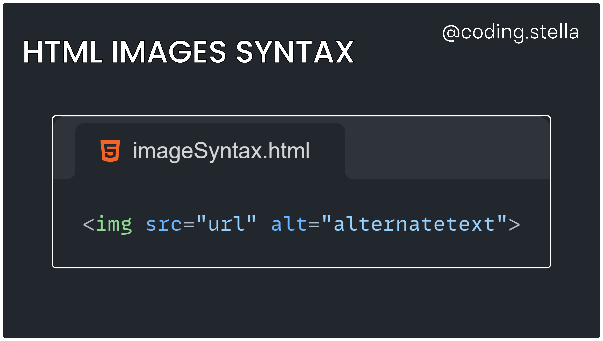

HTML/CSS/JS/REACT
HOME
# Topic 1:HTML Comments
- 👉 HTML comments are not displayed in the browser, but they can help document your HTML source code.
👉 HTML Comment Tag
- You can add comments to your HTML source by using the following syntax:

👉 Hide Content
- Comments can be used to hide content.
- This can be helpful if you hide content temporarily:
👉 Hide Inline Content
- Comments can be used to hide parts in the middle of the HTML code.
Topic 2:HTML Colors
**👉** In HTML, a color can be specified by using a color name:

👉 Background Color
- You can set the background color for HTML elements:
👉 Text Color
- You can set the color of text:
👉 Border Color
- You can set the color of borders:
Topic 3: HTML Links
👉HTML Links
- Links are found in nearly all web pages. Links allow users to click their way from page to page.
- HTML links are hyperlinks.
- You can click on a link and jump to another document.
- When you move the mouse over a link, the mouse arrow will turn into a little hand.
- Note: A link does not have to be text. A link can be an image or any other HTML element!
👉 HTML Links - Syntax
- The HTML <a> tag defines a hyperlink. It has the following syntax:

- The most important attribute of the <a> element is the href attribute, which indicates the link's destination.
- The link text is the part that will be visible to the reader.
- Clicking on the link text, will send the reader to the specified URL address.

- 👉 By default, links will appear as follows in all browsers:
- An unvisited link is underlined and blue
- A visited link is underlined and purple
- An active link is underlined and red
👉HTML Links - The target Attribute
- By default, the linked page will be displayed in the current browser window. To change this, you must specify another target for the link.
- The target attribute specifies where to open the linked document.
- _self - Default. Opens the document in the same window/tab as it was clicked
- _block - Opens the document in a new window or tab
- _parent - Opens the document in the parent frame
- _top - Opens the document in the full body of the window

👉 HTML Links - Use an Image as a Link
- To use an image as a link, just put the <img> tag inside the <a> tag:
👉 Link to an Email Address
- Use mailto: inside the href attribute to create a link that opens the user's email program (to let them send a new email):
Topic 4: HTML Images
- Images can improve the design and the appearance of a web page.
👉 HTML Images Syntax
- The HTML <img> tag is used to embed an image in a web page.
- Images are not technically inserted into a web page; images are linked to web pages. The <img> tag creates a holding space for the referenced image.
- The <img> tag is empty, it contains attributes only, and does not have a closing tag.
- The <img> tag has two required attributes:
- src - Specifies the path to the image
- alt - Specifies an alternate text for the image

👉 The src Attribute
- The required src attribute specifies the path (URL) to the image.
- You can use the style attribute to specify the width and height of an image.
👉 The alt Attribute
- The required alt attribute provides an alternate text for an image, if the user for some reason cannot view it (because of slow connection, an error in the src attribute, or if the user uses a screen reader).
- The value of the alt attribute should describe the image:
- If a browser cannot find an image, it will display the value of the alt
attribute: